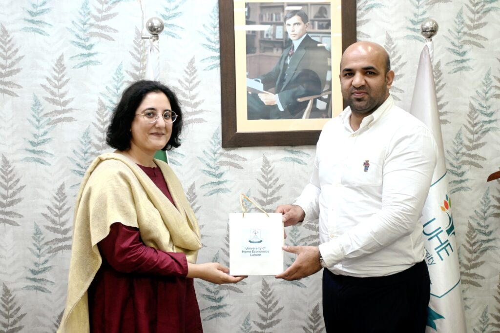
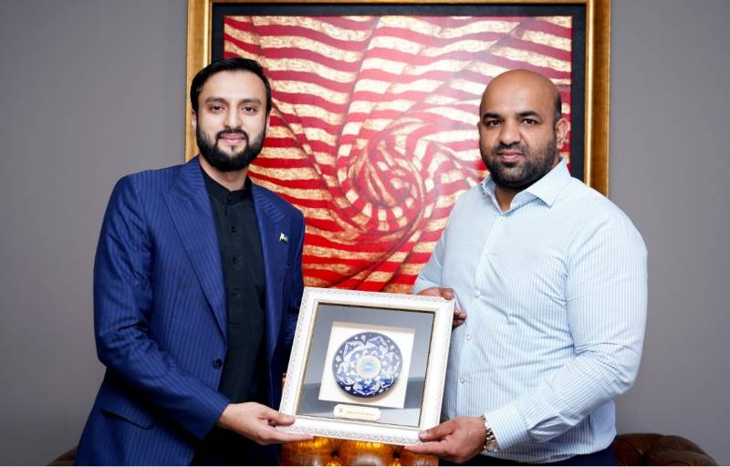

Current Initiatives
Honhaar Scholarship Program
The flagship scholarship initiative providing financial support, laptops, and educational resources to deserving students across Punjab's public and private universities. Covering every district of Punjab with a focus on merit over means.
Smart Schools Project — Phase 1
Transforming traditional government classrooms into smart learning environments with interactive boards, digital libraries, and internet access. Rolling out across 5,000 schools with a further 10,000 planned in subsequent phases.
AI-Powered Literacy — Google Gemini
Implementing Google's Gemini AI and Read Along technology in Punjab government schools to boost literacy outcomes. World Bank-endorsed initiative that makes Punjab a leading EdTech case study for the developing world.
School Meal Program — Allah Walay Trust
Partnership with Allah Walay Trust — a facility capable of preparing meals for 75,000 people in just 2 hours — to deliver the School Meal Program to students. The Minister has committed to expanding this collaboration to reach more students across Punjab.
Korea–Pakistan Education Exchange
Government-funded Korean language program at Punjab institutions with students earning government scholarships to study in South Korea. Formalized through a meeting with a Korean delegation at University of Home Economics, Lahore.
STEM Labs & Clubs Expansion
Established STEM clubs and dedicated science, computer, and engineering labs in high and higher secondary schools across Punjab — giving a generation of students hands-on access to the tools of the future.
Key Public Events

Honhaar Scholarship Ceremony — UVAS Lahore
Delivered the keynote address at the University of Veterinary and Animal Sciences (UVAS) Lahore, announcing the launch of the Honhaar Scholarship Program. Financial aid and laptops were distributed to DVM students, marking the beginning of one of Punjab's most impactful education welfare initiatives. The ceremony underscored the government's commitment to empowering the next generation of professionals through both education access and technology provision.

Meeting with VC — University of Home Economics, Lahore
Held a high-level meeting with Prof. Dr. Zaib-un-nisa Hussain, Vice-Chancellor of University of Home Economics Lahore, centred on improving education quality and ensuring a brighter future for female students. During the same engagement, 116 students received Honhaar Scholarship cheques, announcements were made for two electric buses for UHE students, and a laptop distribution drive was confirmed — a comprehensive demonstration of the Ministry's commitment to student welfare.

Productive Meeting with UMT President
A comprehensive meeting with Ibrahim Hasan Murad, President of the University of Management and Technology (UMT), focused on governance of public sector universities, education reforms, scholarships, and the laptop scheme. The Minister appreciated UMT's contributions to stability and growth, and noted UMT's pioneering launch in the Metaverse — signalling openness to next-generation academic formats. The book "Ilm Amal Zindagi" was presented to the Minister.

Visit to Allah Walay Mega Kitchen
Visited the Allah Walay Mega Kitchen alongside his team, meeting Chairman Shahid Lone of Allah Walay Trust. Was deeply impressed by the facility's ability to prepare meals for 75,000 people in just 2 hours. The Minister praised the Trust's School Meal Program and personally committed to future collaboration between the Ministry of Education and Allah Walay Trust — with a shared focus on student nutrition and welfare at scale.
Initiative Details →
10,000 Laptops for Private Sector Students
This landmark ceremony extended digital resources to 10,000 deserving students across private educational institutions — the first time in Punjab's history that the laptop scheme was extended beyond public sector universities. By bridging the public-private digital divide, this initiative signals a new era of inclusive tech access where merit determines support, regardless of the type of institution a student attends.
Grassroots Engagement
Son Enrolled in Government School — Kasur
In a powerful and nationally covered gesture, Minister Hayat enrolled his own son in a government school in Kasur, studying alongside children of school teachers and naib qasids. "I am proud that my son studies alongside the children of our Naib Qasids and teachers," he told media. Covered by Express Tribune and ARY News.
PEF Partner Schools Review — 2.6M Students Served
Visited the Punjab Education Foundation head office to review how its partner-school model is reaching underserved communities. Officials briefed the minister that more than 2.6 million students were already receiving free education through 7,000+ partner schools, and he pledged to expand collaboration for out-of-school children.
Punjab Education Sector Plan 2025–2030 Workshop
Participated in and co-shaped the Punjab Education Sector Plan 2025–2030, a strategic five-year roadmap developed with government, academic, and civil society stakeholders under CM Maryam Nawaz's vision — covering all 36 districts with measurable targets for enrollment, quality, digital access, and gender equity.
Back to School Campaign — 500,000 Child Target
Chaired the province-wide review of the Back to School campaign under the slogan "Parho or Jagmagao" and set a target of bringing at least 500,000 children into classrooms. The push also focused on reducing post-vacation dropouts through school councils and aggressive public outreach.
Sensitive Exam Centres Surprise Visit
Conducted surprise visits to sensitive examination centres on Raiwind Road, checked identity verification, reviewed staff attendance, and took direct feedback from students. The monitoring drive was paired with face-detection and 3D barcode checks, with the ministry claiming cheating cases dropped by around 90% year over year.
World Children's Day — Student Minister for a Day
On World Children's Day, he symbolically handed ministerial charge to matric high-achiever Abuzar, who chaired meetings with officials, reviewed teacher intern recruitment, discussed hardship transfers, and raised issues like scholarships, fee waivers, and transport for teachers in remote areas.
School & Field Visits
Surprise School Inspections
Regular unannounced visits to government schools across Punjab to check teacher attendance, infrastructure quality, and student enrollment accuracy. These visits are directly linked to the ghost enrollment elimination drive and teacher accountability reforms.
New School Building Inaugurations
Personally inaugurated multiple new school building projects and upgrades across Punjab, particularly in underserved rural areas of PP-183 and neighboring constituencies — ensuring communities that were historically neglected gain first access to quality infrastructure.
Parent–Teacher Council Engagements
Facilitated formal Parent–Teacher Council sessions across PP-183 Kasur-IX, empowering local communities to participate directly in their children's education. These sessions have been instrumental in improving both school attendance and parental investment in education.
"I am proud that my son studies alongside the children of our Naib Qasids and teachers. If government education is good enough for the children of those who run these schools, it must be good enough for mine."— Rana Sikandar Hayat · On enrolling his son in a Kasur government school